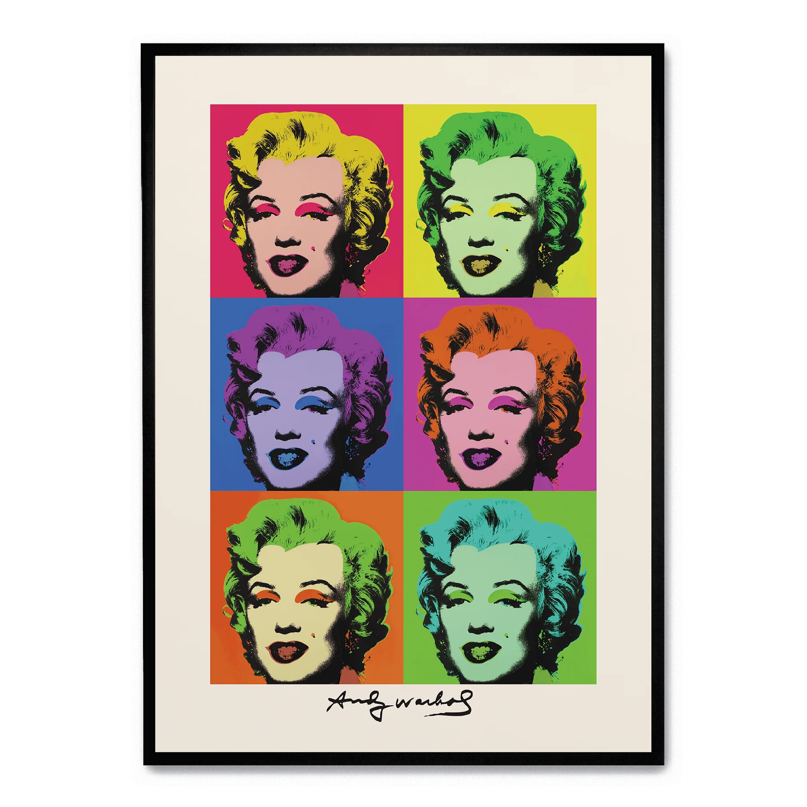
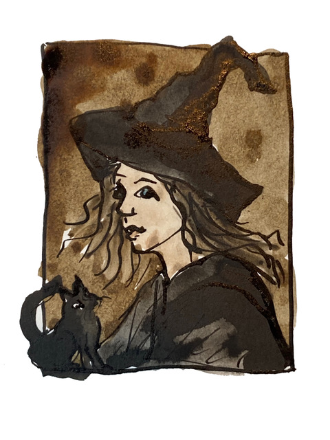

Visual Design and Web Project Assignment 1 - Image 5
Objective
Create a web-optimised picture of Morgana Le Fey (a witch from Arthurian legend) in the style of Andy Warhol’s silk screen prints of Marilyn Monroe in the series Shot Marilyn (1964).
The Process
The starting point for colour and style reference was the poster of six Marilyn Monroe images in the series Shot Marilyn (1964).

The witch is one of eight original watercolours provided by Rachel Mulligan as a JPEG for the Web Witchcraft and Wizardry project.

The images were manipulated in Krita. First the witch was traced and clipped to remove the background, then layers were added to select and recolour different areas of the image (hat, face, eyes, lips, cat and background). Texture was added to the hat and cat areas using a dry brush effect to avoid them being just a flat colour. This was not entirely successful and with more time to invest in learning Krita this could have been improved to more closely match the silk screen effect on the original Marilyn's hair, Colours were taken from the reference poster of Shot Marilyn. Once one portrait was completed, the layers were grouped into a layer group and the layer group was duplicated to create the other portraits. These were then individually recoloured to match the different colour schemes of the reference poster and moved to the correct grid positions. Finally a black border was put around the page and the Embodied Mind logo was added in place of Warhol’s signature in the original.
The Krita file, which can be accessed here, was exported in both WEBP and a JPEG (with progressive loading) formats. The WEBP file is the preferred format for the web, but the JPEG file is included as a fallback for browsers that do not support WEBP.
The Result